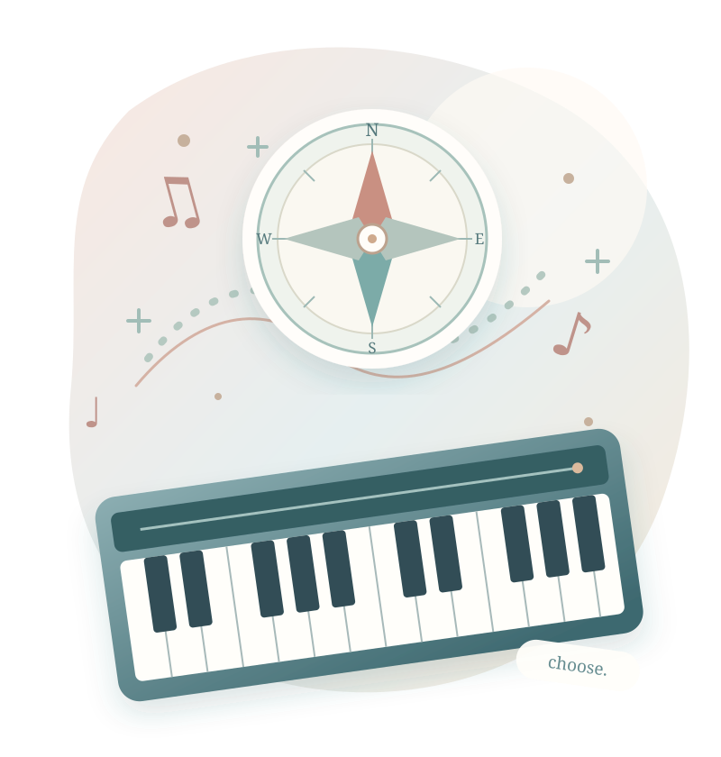

A LITTLE ESSAY FOR PIANO TEACHERS
ピアノを教える、すべての人へ。
「自立」とは何か。
先生がいなくても弾ける。
でも、本当の自立は、
それだけなのでしょうか。

listen.choose.先生がいなくても弾ける。
それだけが「自立」だろうか。
先生がそばにいないとき、自分の音を聴いて考えられる。困ったら、必要な助けを求められる。音楽とどう関わるかを、自分で選べる。
「教える」「学ぶ」「育つ」のその先で、私たちは何を手渡そうとしているのでしょう。
先生に頼らず弾くことと、自分で判断できることは同じでしょうか。
教えすぎず、放任にもならない支え方はあるのでしょうか。
いつか教室を離れるその子に、何を残したいでしょうか。
自立は、孤立ではない。選択と支え合いの中で育つ力について。
BEYOND DOING IT ALONE
自立とは、
「一人でできる」ことなのか。
先生に手伝ってもらわず一曲を弾ききった。立派な一歩です。しかし、間違いに気づかず、ただ覚えた指の動きを繰り返すことを、そのまま「自立」と呼べるでしょうか。反対に、難しい曲を前に「ここは自分では判断できないから、相談したい」と言える子は、自分の困りごとを理解しています。
自立と孤立は違います。自分で何でもする能力だけでなく、自分で考え、選び、必要な関係を結び直せること。その視点から、音楽教育の自立を考え直してみましょう。
先生に聞かずに
最後まで弾けた
聴いて、考え、選び
必要なら助けを求める
本稿の考察に基づく説明用の概念図。実測データや発達診断ではありません。
THREE DISTINCT IDEAS
自立には、
三つの異なる意味がある。
「自立」という一語には、しばしば異なる意味が混ざっています。人の助けなしに実行できること。自分の意思で選ぶこと。自分の行動を調整できること。これらは重なりますが、同じではありません。
先生に言われた通り、毎日欠かさず練習する子は、行動面では独立しているかもしれません。でも「なぜその曲を弾くのか」を自分の言葉で語れるとは限りません。本稿では独力で遂行する力・自分の価値として選ぶ力・自分の学びを調整する力を区別します。心理学の公式分類ではなく、レッスンで混同しないための整理です。
本稿の考察に基づく説明用の概念図。実測データや発達診断ではありません。
CHOICE WITH MEANING
「自分で選ぶ」は、
好き勝手とは違う。
「好きな曲を選んでいいよ」と言われても、選び方がわからない子がいます。逆に、先生が提案した曲を、自分で意味を見いだして熱心に練習する子もいます。自由な選択肢の数だけで、自律性は決まりません。
自己決定理論は、自律性・有能感・関係性という三つの基本的心理欲求を論じます。自律性は、ただ誰からも指示されないことではなく、行動を自分のものとして受け止めることに関わります。自己決定理論の解説 ↗。大切なのは、選んだ理由が本人の中に育つこと。形式だけの自由では、先生の望む答えを選ばせている可能性もあります。
本稿の考察に基づく説明用の概念図。実測データや発達診断ではありません。
THE EAR THAT GUIDES
自立する耳は、
自分の音を問い直す。
先生が「今の音、少し強かったね」と言えば直せる。では、先生が何も言わないとき、その子は自分で気づけるでしょうか。ここに、演奏の自立を考える重要な手がかりがあります。
演奏には、音を思い描き、鳴らし、聴き、思い描いた音と比べ、次の一音を変える循環があります。自分の音を自分で聴き、次の判断につなげられることは、音楽的な自己調整の一つの姿です。ただし、頭の中の音の鮮明さと演奏能力の因果関係を断定するものではありません。録音・歌・身体感覚など複数の手がかりを使えるようにしたいのです。
どんな響きにしたい？
実際に弾いてみる
どんな音がした？
思った音とどう違う？
次の一音を変えてみる
本稿の考察に基づく説明用の概念図。実測データや発達診断ではありません。
PLAN • MONITOR • EVALUATE
練習の自立は、
「自分で考える練習」から。
「ここを十回弾いてきてね」。明快な宿題です。しかし、十回のうち何が変わったのかを確かめなければ、回数をこなすこと自体が目的になってしまうことがあります。
メタ認知と自己調整学習の研究では、学習者が自分の取り組みを計画し、途中で確かめ、結果を評価する過程が重視されます。EEFは、これらの方法を具体的な教科内容の中で明示的に教えることを勧めています。EEFガイダンス ↗。ピアノなら「今日は何をよくしたい？」「今の方法は効いている？」「次は何を変える？」。練習を自分で調整できることが自立につながります。
本稿の考察に基づく説明用の概念図。実測データや発達診断ではありません。
SCAFFOLDING AND RELEASE
教師の役割は、
手を放すことではない。
自立を願うあまり、難しい課題をいきなり「自分で考えて」と渡してしまうことがあります。しかし、何をどう考えればよいか知らない子にとって、それは自由ではなく、途方に暮れる時間かもしれません。
足場かけ（スキャフォールディング）は、必要な支援を与え、学習者が使えるようになった支えを徐々に調整する考え方です。EEFの指針でも、教師のモデル提示、ガイド付きの実践、独立した実践への段階的な移行が重視されています。足場かけの実践解説 ↗。先生が「私はここで左手を聴くよ」と見せる。次に「一緒に聴こう」。やがて「自分なら何を聴く？」へ。教える量を減らすことではなく、判断を本人に返すことが大切です。
本稿の考察に基づく説明用の概念図。実測データや発達診断ではありません。
ERRORS AS INFORMATION
間違いを見つける力より、
間違いと向き合う力。
間違えた瞬間、先生の顔を見て答えを待つ子がいます。正解を早く教えれば、その場の演奏は整うかもしれません。しかし、先生がいないときに何をすればよいかは残らないかもしれません。
自立した学習者は、失敗を歓迎しなければならないわけではありません。悔しいことも、怖いこともあります。重要なのは、失敗を人格の評価ではなく、次の行動を選ぶための情報として扱えることです。「間違えたね」で止めず、「どこから音が変わった？」「速さを落とすと何がわかる？」と問いを置く。ただし不安が強い場合は、まず安心と具体的な助けが必要です。
結果だけが残ると、次の行動が見えにくい。
音を手がかりに、次の試し方を選ぶ。
本稿の考察に基づく説明用の概念図。実測データや発達診断ではありません。
INTERDEPENDENCE, NOT ISOLATION
自立は、
助けを求める力も含む。
伴奏者と呼吸を合わせる。友だちに弾き方を聞く。わからないことを先生に相談する。どれも、一人ではできない行為です。しかし、これらを「自立していない」と見る必要はありません。
OECDのラーニング・コンパスは、自ら方向を定める力と、周囲の人々と協働する力を重視しています。人は社会的な関係の中で学び、判断し、行動します。OECDの枠組み ↗。本当に困ったとき「誰に、何を、どう頼むか」を考えられることも、大切な力です。自立とは、誰も必要としなくなることではなく、自分で関係を選び、支え合えるようになることなのです。
本稿の考察に基づく説明用の概念図。実測データや発達診断ではありません。
DIFFERENT PATHS AND SUPPORTS
「自立しているか」は、
年齢だけで決められない。
年少の子が「この音が好き」と選ぶことと、中学生が自分で練習計画を立てることは、同じ形ではありません。また、同じ年齢でも経験、発達、心身の状態、家庭環境によって必要な支えは違います。
一人で練習できる時間が長いことだけを、自立の尺度にしないでください。音の違いを指させること、自分の気持ちを表情で示すこと、苦手な場所を先生と一緒に選ぶことも、本人の意思が表れる場面です。その子が今、どの部分を自分で担い、どの部分に支えを必要としているかを見つめる。支援を受ける権利と、自分で選ぶ機会は両立します。
本稿の考察に基づく説明用の概念図。実測データや発達診断ではありません。
THE TEACHER'S PRACTICE
自立を育てるレッスンは、
何を変えるのか。
自立は、卒業間近になって突然教えるものではありません。今日のレッスンの小さなやりとりの中で、判断の機会を誰が持っているかが積み重なっていきます。
先生がすべての誤りを先に指摘する代わりに、本人の感想を聞く。練習量だけを約束する代わりに、練習の目的を一緒に決める。できた・できないだけで終える代わりに、次に何を試したいかを尋ねる。これは放任ではなく、支援の設計です。一方、選択を強制してはいけません。疲れている子には選択肢を絞ったり、先生がモデルを示したりしてよい。「自分で決めなさい」という命令からは、必ずしも自律は生まれません。
「自分ではどう感じた？」
「どこを変えたい？」
「この二つならどちら？」
「それで音は変わった？」
「家ではどう試そう？」
本稿の考察に基づく説明用の概念図。実測データや発達診断ではありません。
MUSIC BEYOND THE TEACHER
自立とは、
音楽を自分の人生に取り戻すこと。
先生の課題曲を弾く時間は、いつか終わるかもしれません。受験や仕事でピアノから離れることもあります。それでも、好きな曲を探したり、音楽を聴いて心を動かされたり、再び鍵盤に触れたりする自由は、その人の中に残ります。
教師の目的は、いつまでも教師の指示が必要な演奏者をつくることではないでしょう。音楽をどう楽しみ、どこまで関わり、いつ休み、また始めるかを、本人が選べるようになること。生涯先生に学び続けても、自分の意思で学ぶなら自律的です。逆に、もう弾かないと選ぶことも、その人の人生の選択です。音楽教育が尊重すべきなのは、音楽を続けさせること以上に、その人自身の主体性なのではないでしょうか。
本稿の考察に基づく説明用の概念図。実測データや発達診断ではありません。
THE ESSENCE OF INDEPENDENCE
自立とは、
一人になることではなく、
自分の人生の舵を取ること。
音楽教育における自立とは、自分の耳で確かめ、課題を見つけ、方法を選び、必要な支援を使いながら、音楽との関わりを自分の意思で築いていくことである。
これは本稿が提案する教育哲学上の定義です。自己決定理論、自己調整学習、足場かけ、学習者のエージェンシーに関する研究を参考にしていますが、単一の学説の公式定義ではありません。
先生が教える。子どもが学ぶ。その経験の中で子どもが育つ。そして、いつか自分で選び、考え、音楽と関わる。そのとき、教室で受け取ったものは、本人の力として生き始めるのかもしれません。
教師にできることは、正しい音を示すことだけではありません。子どもが自分の音を聴き、自分の問いを持つための余白を残すことです。
ONE LAST QUESTION
今日、先生が答える前に、
その子自身が考える時間を
残せただろうか。
自立は、いつか訪れる卒業の日だけに育つのではありません。
今日のレッスンで、本人に返した一つの判断から始まります。
FURTHER READING
研究と、本稿独自の考察について
研究上の知見と本稿独自の音楽教育への応用を区別しています。図は説明用の概念図であり、心理尺度や発達段階、実測データではありません。個々の生徒の自立度を一律に評価するものではありません。
- 01Self-Determination Theory — Theory ↗
自律性・有能感・関係性と動機づけに関する理論。
- 02Education Endowment Foundation — Metacognition and Self-Regulated Learning (2025) ↗
計画・モニタリング・評価の明示的な指導、モデル提示と段階的な支援。
- 03EEF — Scaffolding Independent Learning (2026) ↗
自立を支える足場かけと支援の調整。
- 04OECD — Learning Compass 2030 ↗
学習者のエージェンシーと周囲の人々との協働による主体的な学び。
- 05National Academies — How People Learn II (2018) ↗
学びの個人差、社会的・文化的文脈と生涯にわたる学習。